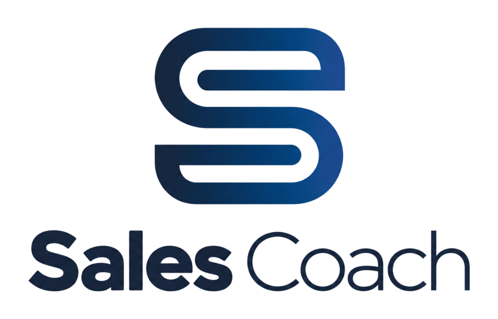
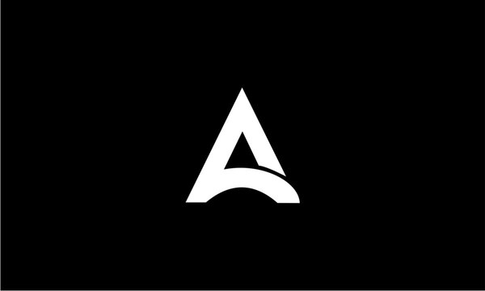

Sales Coach · logo com símbolo "S"
Atlas · logoDossiê para registro de marca e proteção do Sales Coach · levantamento de 19/11/2026
01-identidade-visual.02-politicas-e-termos.03-sales-coach-telas.
Sales Coach · logo com símbolo "S"
Atlas · logo| Elementos | Logotipo "NEXA" desenhado em traço contínuo (arquivo vetorial) e ícone "N" lima sobre fundo escuro. |
|---|---|
| Cores | osso #F3F4EE · tinta #10120E · lima #D4F969 · oliva #587406 |
| Tipografia | Space Grotesk (títulos), DM Sans (texto), JetBrains Mono (detalhes), Instrument Serif itálico (destaques). Todas são fontes livres do Google Fonts. |
| Slogans em uso | "IA acelera. Pessoas dão direção." · "Inteligência que vira solução" |
| Presença | Site nexatech.ia.br · Instagram @nexatech_ia |
| Elementos | Símbolo "S" (versões azul e branca), logo com nome, ícone da extensão (128 px) e assinatura "Sales Coach · um produto NEXA". |
|---|---|
| Cores | azul #154A8E · marinho #071D36 · lima #D9FB7A (destaque nos materiais) |
| Tipografia | Poppins (assinatura e app), Space Grotesk e DM Sans (materiais). |
| Slogans em uso | "Cada reunião vira método." · "Seu time vende. O Sales Coach faz o resto." · "Um coach em cada reunião do seu time" |
| Presença | Página nexatech.ia.br/sales-coach · aplicativo salescoach.grougp.com.br · extensão do Chrome "Sales Coach — Gravador e Coach ao Vivo" (versão 1.13.4) |
| Elementos | Símbolo em forma de "A" (versões marinho e branca) e logo com nome. Produtos: Atlas Clima e Atlas 360. |
|---|---|
| Cores | marinho #071A34 · branco |
| Presença | Página nexatech.ia.br/atlas |
falta Não existe manual de marca formal (área de proteção, tamanhos mínimos, usos proibidos). Hoje há só as diretrizes de conteúdo para redes sociais. Se o registro pedir a marca mista com as cores, vale fechar uma versão oficial de cada logo.
| Marca | Apresentação sugerida · Classes NCL a avaliar |
|---|---|
| NEXA | Nominativa e mista (logotipo) · 42 (desenvolvimento de software e soluções de IA, SaaS), 35 (consultoria em gestão e vendas), 41 (treinamentos e conteúdo) |
| Sales Coach | Mista (símbolo "S" + nome), ou nominativa como "NEXA Sales Coach" · 42 (software como serviço), 9 (software e extensão para download), 35 (análise e consultoria de vendas), 41 (treinamento de vendedores) |
| Atlas | Mista (símbolo + nome) · 42 (software como serviço), 35 (pesquisa de clima e gestão de pessoas), 9 |
No Brasil, programa de computador "em si" não é patenteável (Lei 9.279/96, art. 10). Há dois caminhos que podem se somar:
Divulgação pública: o Sales Coach está público pelo menos desde setembro de 2026 (site, extensão na Chrome Web Store, posts e eventos). Para patente, a lei dá 12 meses de período de graça a partir da primeira divulgação pelo próprio inventor (art. 12). Convém levantar a data exata da primeira divulgação e não publicar detalhes técnicos novos até a Fabi orientar.
As telas do produto estão em 03-sales-coach-telas. O código-fonte e o histórico de versões ficam nos repositórios do GitHub e podem ser exportados para o registro do programa.
| Documento | Situação |
|---|---|
| Política de privacidade · NEXA | existe Site, materiais gratuitos e Instagram. Publicada em nexatech.ia.br/privacidade (atualizada em out/2026). PDF incluído. |
| Política de privacidade · Sales Coach e extensão | existe Define a NEXA como operadora e a empresa cliente como controladora. Descreve o que a extensão coleta. Publicada em nexatech.ia.br/sales-coach/privacidade e usada na Chrome Web Store. PDF incluído. |
| Termos de uso do Sales Coach (plataforma e extensão) | falta Inclui uso aceitável e responsabilidade pelo consentimento das pessoas gravadas nas reuniões (do cliente). |
| Contrato de serviço (SaaS) ou condições gerais | parcial Hoje a proposta online, aceita em um clique, traz só as condições comerciais: contratação anual, 12 mensalidades mais a implantação, cartão ou boleto. Falta o contrato a que o aceite se refere: prazo, renovação, cancelamento, SLA, limitação de responsabilidade e propriedade intelectual. |
| Acordo de tratamento de dados (LGPD) | falta A política já coloca a NEXA como operadora. Falta o instrumento com o cliente: instruções, suboperadores (Supabase, Cloudflare, provedores de IA e de transcrição), segurança, incidentes e devolução dos dados. |
| Política de privacidade e termos · Atlas | falta A página do Atlas usa a política geral da NEXA. O Atlas trata respostas de clima, avaliação 360 e temas de saúde mental (NR-1), que pedem cuidado com anonimato e com dados possivelmente sensíveis. |
| Política de cookies | falta O site prevê o Pixel da Meta e medição de campanhas. |
| Manual de marca | falta Ver a seção 1. |
01-identidade-visual/: logos e símbolos da NEXA (SVG), do Sales Coach (PNG) e do Atlas (SVG e JPG).02-politicas-e-termos/: as duas políticas de privacidade em PDF.03-sales-coach-telas/: oito telas do produto (durante a reunião, análise, base de conhecimento, CRM, treino, gestão, assistente e robô de gravação).